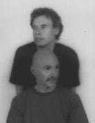

No reviews as yet, but he has so many projects and bands that I thought I'd list them here. Arguably the best bassplayer in the world. Mostly known for his work with Peter Gabriel, but also a steady member of King Crimson.